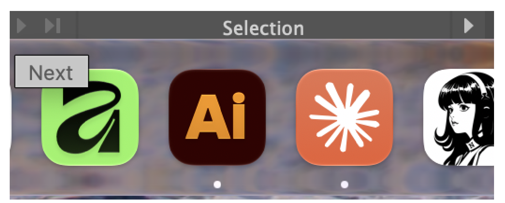

V
Vector Panel
แก้สีบนแผนที่พิกเซล ก่อนทำเส้นให้เรียบ
ภาพตัวอย่าง
แก้สีลายลูกโป่งจำลอง มีจุดส้มอ่อนและเส้นขอบบางให้ลอง Zap หน้านี้ใช้ตัวแก้สีชุดเดียวกับ Panel ใน Illustrator
เส้นจากสีที่แก้
กดดูเส้นเพื่อเห็นสีที่จะส่งเข้าตัวทำเส้น
แก้สีบนแผนที่พิกเซล ก่อนทำเส้นให้เรียบ
ลายลูกโป่งจำลอง มีจุดส้มอ่อนและเส้นขอบบางให้ลอง Zap หน้านี้ใช้ตัวแก้สีชุดเดียวกับ Panel ใน Illustrator
กดดูเส้นเพื่อเห็นสีที่จะส่งเข้าตัวทำเส้น
รอผลแยกสี
